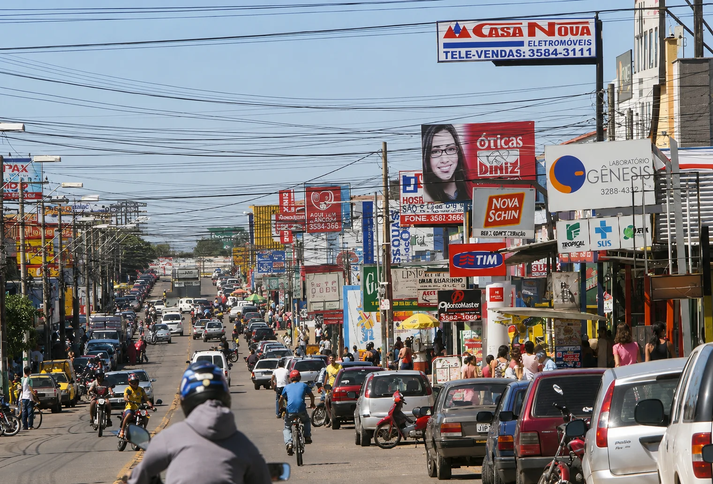
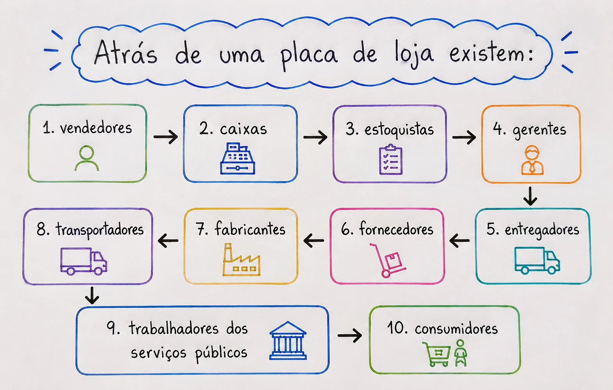
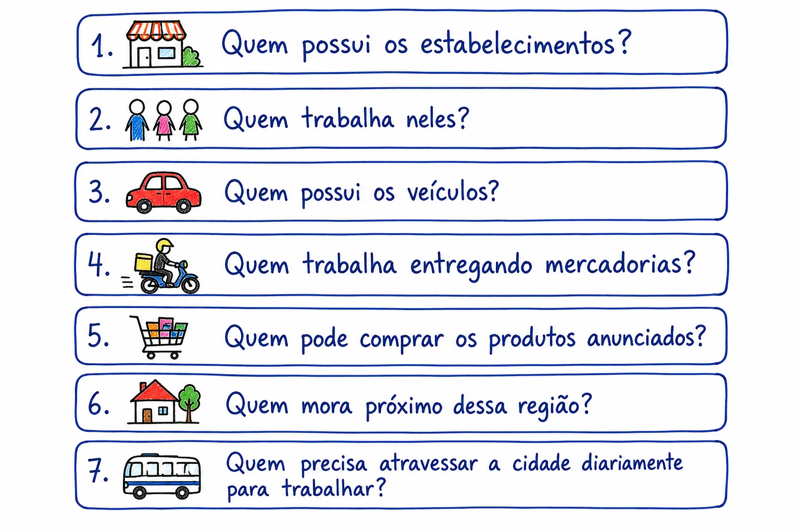
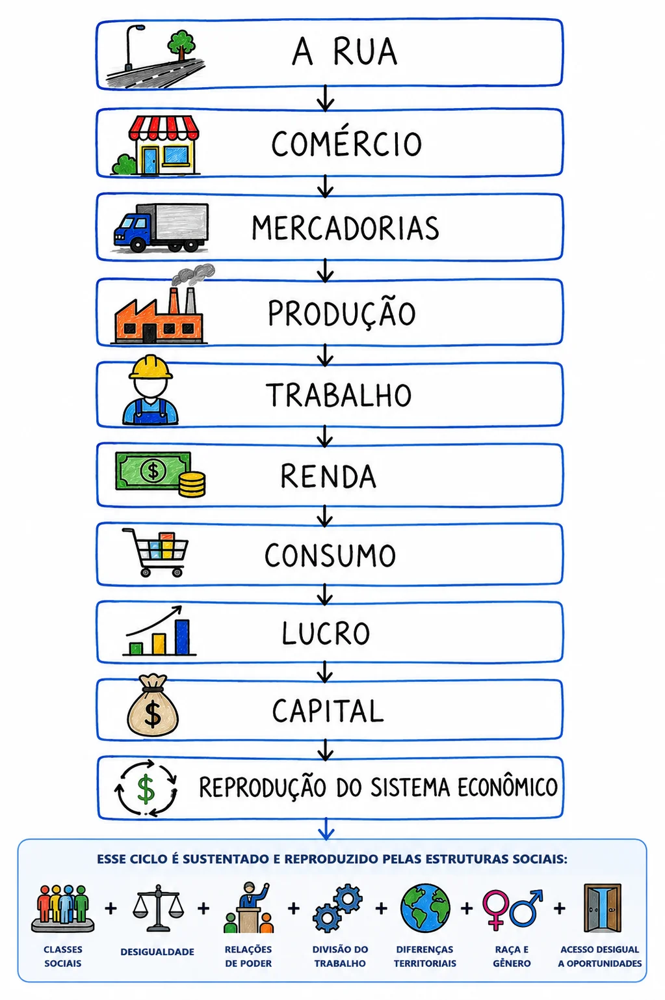
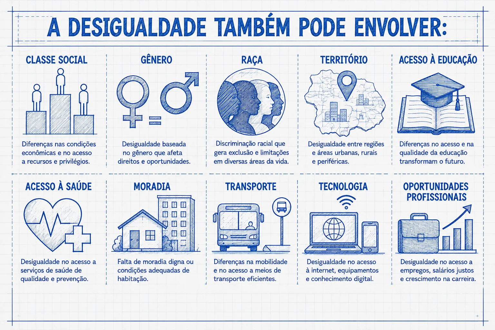
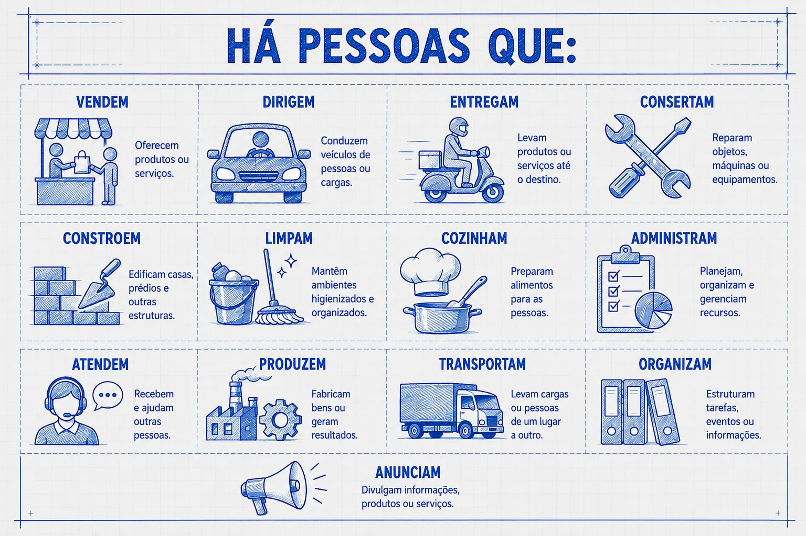
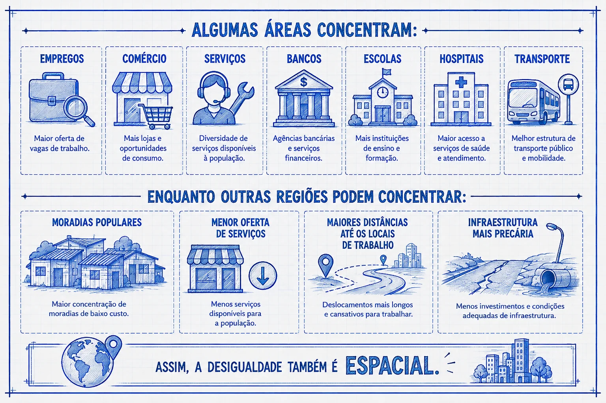
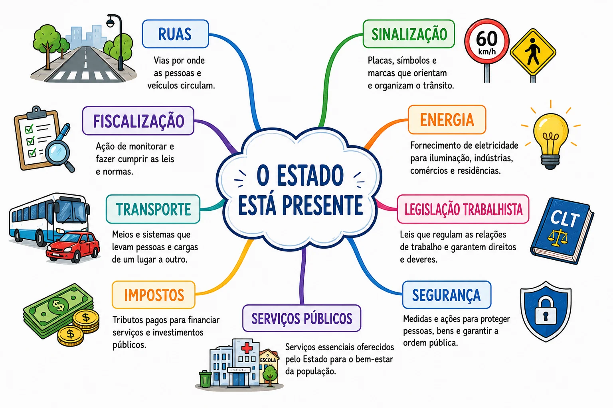
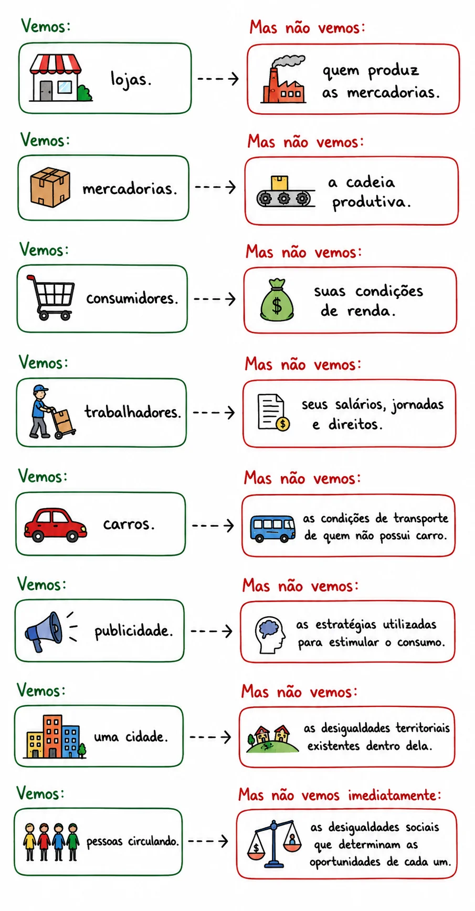
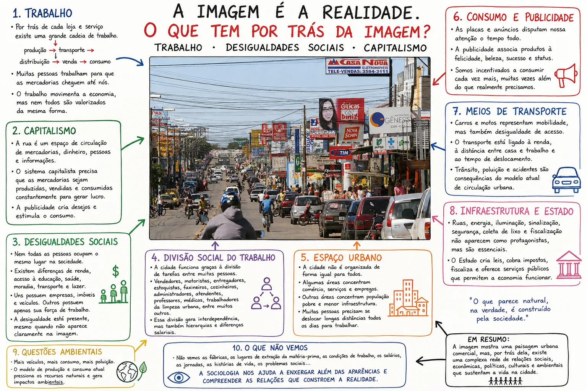

A fotografia mostra uma realidade cotidiana. Mas aquilo que vemos é apenas a superfície. Para compreender a sociedade, precisamos perguntar o que existe por trás da paisagem: trabalho, produção, consumo, desigualdade, relações de poder, infraestrutura, Estado e diferentes formas de viver a cidade.
A imagem pode ser lida como muito mais do que uma fotografia de uma rua movimentada. Ela mostra uma realidade urbana, mas, ao mesmo tempo, esconde uma série de relações sociais que não aparecem imediatamente. É justamente aí que entra o olhar sociológico: perguntar o que existe por trás daquilo que estamos vendo.
O que a imagem mostra?
À primeira vista, vemos:
- uma avenida comercial;
- lojas e grandes placas publicitárias;
- carros, motos e bicicletas;
- trabalhadores e consumidores;
- trânsito intenso;
- prédios e estabelecimentos comerciais;
- uma enorme quantidade de fios;
- pessoas circulando;
- diferentes tipos de veículos;
- comércio formal e atividades de rua.
Mas a fotografia também pode ser interpretada como uma representação visual da sociedade capitalista.
1Por trás do comércio existe o trabalho
Cada estabelecimento que aparece na imagem depende de pessoas.
Atrás de uma placa de loja existem diferentes trabalhadores, atividades e relações que tornam possível a circulação das mercadorias.

Ou seja, uma simples mercadoria exposta em uma vitrine é resultado de uma enorme cadeia de trabalho.
Uma camiseta, por exemplo, não surgiu naquela loja. Antes de chegar ali, alguém:
- produziu a matéria-prima;
- trabalhou na indústria;
- transportou o produto;
- armazenou;
- distribuiu;
- colocou a mercadoria à venda;
- vendeu ao consumidor.
A fotografia, portanto, esconde milhares de horas de trabalho atrás de cada mercadoria.
2A cidade é também um espaço de produção e circulação do capitalismo
Observe a quantidade de placas comerciais.
A rua não é apenas um lugar para as pessoas passarem. Ela é um espaço de circulação de mercadorias, dinheiro, pessoas e informações.
O capitalismo precisa dessa circulação.
A mercadoria precisa:
A cidade funciona como uma enorme rede que permite esse processo.
Por isso, aquela rua aparentemente caótica pode ser compreendida como uma espécie de "máquina econômica".
3As placas revelam a disputa pela atenção
Outro elemento muito importante é a quantidade de anúncios.
Cada empresa quer dizer:
"Olhe para mim. Compre comigo."
A publicidade transforma o espaço urbano em um grande campo de disputa pela atenção.
Não basta produzir uma mercadoria. É preciso convencer alguém de que precisa daquela mercadoria.
Isso nos leva ao conceito de sociedade de consumo.
A publicidade pode associar produtos a:
- felicidade;
- beleza;
- status;
- juventude;
- sucesso;
- segurança;
- pertencimento;
- praticidade.
Assim, a rua não está apenas cheia de lojas. Ela está cheia de mensagens tentando influenciar comportamentos.
4O consumidor também aparece como personagem
As pessoas que caminham pela rua não estão ali apenas como indivíduos.
Elas também são consumidoras.
O capitalismo contemporâneo depende da existência de pessoas dispostas a comprar mercadorias e serviços.
Existe, portanto, uma relação:
Esse ciclo movimenta a economia.
Mas existe uma contradição importante:
nem todas as pessoas participam desse ciclo nas mesmas condições.
5A desigualdade social está presente mesmo quando não aparece claramente
Talvez esse seja um dos aspectos mais interessantes da imagem.
A fotografia não apresenta uma tabela mostrando quem é rico e quem é pobre.
Mesmo assim, podemos perguntar:

Essas perguntas revelam algo fundamental:
A cidade é socialmente desigual.
Pessoas diferentes ocupam posições diferentes dentro da estrutura econômica.
Algumas possuem:
- empresas;
- imóveis;
- capital;
- veículos;
- investimentos;
- patrimônio.
Outras possuem principalmente sua força de trabalho, que precisam vender para obter renda.
6Marx ajudaria a enxergar outra camada da fotografia
A partir de Karl Marx, podemos olhar para essa paisagem pensando nas relações entre capital e trabalho.
Uma parte da sociedade possui os meios de produção e o capital.
Outra parte depende da venda de sua força de trabalho.
Isso não significa que todas as relações de trabalho sejam iguais ou que todo trabalhador esteja necessariamente em situação de pobreza.
Significa perceber que existe uma estrutura econômica que distribui de maneira desigual:
- propriedade;
- renda;
- riqueza;
- poder econômico;
- oportunidades.
Assim, atrás de uma simples loja podemos perguntar:
Quem é proprietário e quem é trabalhador?
Essa pergunta muda completamente a leitura da fotografia.
A grande leitura da imagem
Podemos sintetizar assim:

Mas esse processo acontece dentro de uma sociedade marcada por:
7Mas a desigualdade não é apenas econômica
A desigualdade também pode envolver diferentes dimensões da vida social:

Por isso, duas pessoas que caminham pela mesma rua podem estar vivendo realidades sociais completamente diferentes.
Elas compartilham o mesmo espaço urbano, mas não necessariamente possuem as mesmas oportunidades.
8O carro também conta uma história social
Observe a quantidade de automóveis.
O carro não é apenas um meio de transporte.
Ele pode representar:
Mas existe uma contradição.
Quanto maior a quantidade de veículos, maior pode ser:
- o congestionamento;
- a poluição;
- o consumo de combustível;
- a necessidade de infraestrutura;
- o tempo perdido no deslocamento.
A própria organização da cidade passa a depender da circulação de mercadorias e trabalhadores.
9E quem está de motocicleta?
As motocicletas também podem ser analisadas sociologicamente.
Elas podem representar:
- mobilidade;
- trabalho;
- entrega de mercadorias;
- deslocamento rápido;
- economia de combustível;
- alternativa ao transporte coletivo.
Mas existe outra questão:
O trabalhador que precisa circular constantemente pela cidade pode estar submetido a:
- acidentes;
- pressão por produtividade;
- longas jornadas;
- instabilidade;
- informalidade ou precarização, dependendo da ocupação.
Portanto, uma motocicleta pode ser simultaneamente instrumento de trabalho e símbolo de uma forma específica de inserção econômica.
10A imagem também mostra a divisão social do trabalho
Uma cidade como essa só funciona porque existe uma enorme divisão de tarefas.

Ninguém consegue produzir sozinho tudo aquilo que consome.
A sociedade moderna é baseada em uma profunda divisão social do trabalho.
Isso gera interdependência.
O problema é que essa interdependência não significa igualdade.
11A imagem também mostra a divisão entre centro e periferia
A localização dos estabelecimentos, o fluxo de pessoas e o tipo de comércio podem ser relacionados à organização desigual do espaço urbano.

A pergunta passa a ser:
Onde as pessoas moram e onde elas precisam trabalhar?
12O tempo também é desigual
Essa fotografia permite pensar em algo ainda mais profundo:
Nem todo mundo possui o mesmo tempo.
Para algumas pessoas, o trabalho está próximo de casa.
Para outras, são necessárias horas de deslocamento todos os dias.
Uma pessoa que passa três horas diariamente no transporte possui uma experiência urbana muito diferente daquela de alguém que trabalha perto de casa.
Portanto, a desigualdade também pode ser pensada como desigualdade no acesso ao tempo.
13A paisagem também revela infraestrutura
Os fios elétricos, postes, ruas, calçadas e construções mostram outra dimensão.
A economia depende de infraestrutura.
Sem:
- energia elétrica;
- internet;
- telefonia;
- transporte;
- ruas;
- água;
- saneamento;
- iluminação;
- segurança;
o comércio não funcionaria da mesma maneira.
Isso nos lembra que o capitalismo não funciona apenas através das empresas privadas.
Ele depende também de infraestruturas coletivas e do Estado.
14O Estado também está "escondido" na imagem
Mesmo que não apareça nenhum prédio governamental, o Estado está presente indiretamente.
Por exemplo:

Existe uma relação permanente entre:
A economia não funciona em um vazio.
Ela funciona dentro de regras, leis, instituições e políticas públicas.
15A fotografia também pode ser lida como uma paisagem da modernização
A enorme concentração de comércio, veículos, publicidade e serviços representa um processo histórico:
urbanização + industrialização + expansão do consumo + crescimento dos serviços.
A cidade transforma-se conforme a economia se transforma.
A rua que vemos hoje provavelmente não existia dessa forma algumas décadas atrás.
Isso significa que a paisagem urbana é também uma paisagem histórica.
Ela registra mudanças sociais.
16O que não aparece é tão importante quanto aquilo que aparece

17A imagem também pode ser relacionada a Max Weber
Se Marx ajuda a pensar principalmente classe, propriedade e relações econômicas, Max Weber permite ampliar a análise.
Para Weber, a posição social não depende exclusivamente da propriedade.
Também podemos considerar:
- classe;
- status;
- poder.
Assim, uma pessoa pode ter determinado nível de renda, mas possuir pouco prestígio social; outra pode ter grande prestígio, mas menor riqueza; outra pode possuir poder político ou institucional.
A paisagem urbana reúne pessoas que ocupam diferentes posições na estrutura social.
18Durkheim também poderia interpretar essa rua
É possível utilizar Émile Durkheim para pensar na divisão social do trabalho.
Nas sociedades modernas, as pessoas tornam-se cada vez mais especializadas.
O vendedor depende do fornecedor.
O fornecedor depende do transportador.
O transportador depende do mecânico.
O mecânico depende de outros trabalhadores.
E assim por diante.
Essa interdependência produz aquilo que Durkheim chamou de solidariedade orgânica.
Portanto, a mesma fotografia pode ser interpretada por diferentes teorias sociológicas.
19E existe uma questão ambiental
A imagem também pode ser lida pelo ponto de vista ambiental.
Mais veículos significam potencialmente:
- maior consumo energético;
- emissão de poluentes;
- congestionamento;
- produção de resíduos;
- pressão sobre infraestrutura.
E existe uma contradição fundamental:
O sistema econômico estimula continuamente a produção e o consumo, mas os recursos naturais são limitados.
Isso leva à discussão sobre:
Uma leitura ainda mais profunda
A fotografia mostra uma sociedade em movimento.
Os carros representam circulação.
As motos representam trabalho e mobilidade.
As lojas representam comércio.
As placas representam publicidade.
As pessoas representam trabalhadores e consumidores.
Os prédios representam a urbanização.
Os fios representam infraestrutura e conexão.
Mas, por trás de tudo isso, existem relações sociais.
É por isso que uma fotografia aparentemente comum pode ser utilizada para ensinar Sociologia/História.
A imagem deixa de ser simplesmente:
"uma rua comercial."
E passa a ser:
"uma representação visual das relações econômicas, sociais e espaciais que organizam a vida em uma sociedade capitalista."
E talvez a pergunta central seja:
"Se retirássemos as lojas, os carros, as placas e as pessoas da fotografia, quais relações sociais continuariam existindo por trás dela?"
Essa pergunta leva da aparência para a estrutura.
E esse é justamente um dos movimentos fundamentais do pensamento sociológico/historiográfico: aprender a enxergar aquilo que está presente na realidade, mas que normalmente não conseguimos ver.

Do que vemos para o que precisamos enxergar
A fotografia mostra uma paisagem cotidiana. A análise sociológica nos ajuda a enxergar, por trás dela, trabalho, produção, consumo, desigualdade, relações de poder, divisão social do trabalho, território, infraestrutura, Estado e meio ambiente.
Assim, aprendemos a passar da aparência para a estrutura: não apenas observar aquilo que está diante dos olhos, mas compreender as relações sociais que organizam a realidade.
📝 Atividade de fixação
Reforce o que você acabou de estudar realizando a atividade proposta para esta introdução.
Atividade de fixação relacionada aos conteúdos apresentados nesta página.